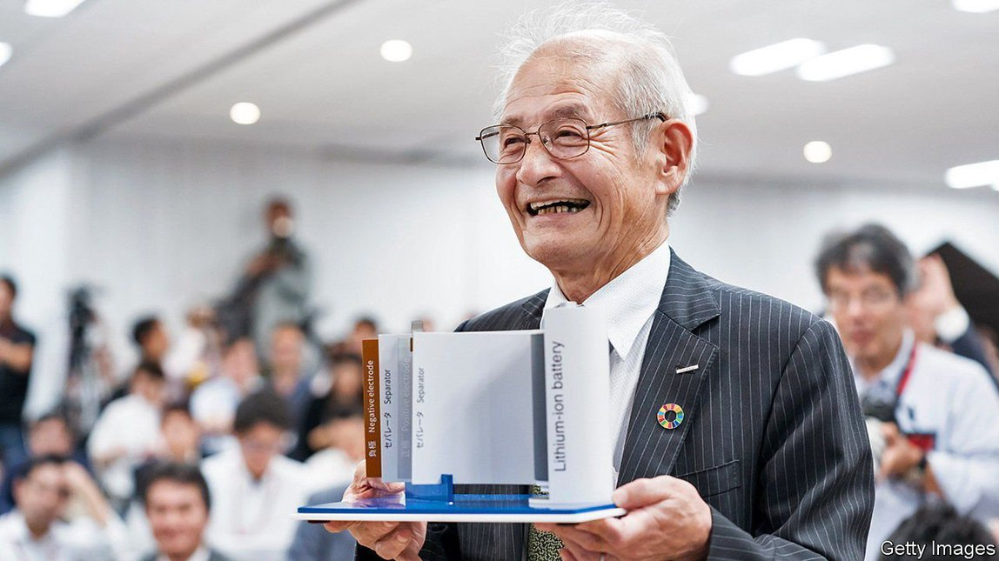

Text
2021-10-12T14:19:41+00:00
Do me a solid
结结实实推一把
結結實實推一把
Japanese companies want to win back their battery-making edge
日本公司希望夺回电池制造优势地位
日本公司希望奪回電池製造優勢地位
They think that solid-state technology will help them do so
它们认为固态电池技术将能帮助自己实现这一目标
它們認為固態電池技術將能幫助自己實現這一目標
WHEN YOSHINO AKIRA, a Japanese chemist, worked on rechargeable batteries in the 1980s, it was with a view to powering portable devices. His Nobel-prizewinning research led to the first commercial lithium-ion (Li-ion) battery. These now power everything from smartphones to electric vehicles (EVs). But the Japanese firms that, building on Mr Yoshino’s work, dominated the Li-ion business early on have lost their edge. CATL, China’s battery giant, and the energy arm of LG, a South Korean group, have eclipsed Japan’s Panasonic as the world’s largest suppliers of EV batteries. Others are catching up in the production of materials and components.
日本化学家吉野彰在上世纪80年代研究可充电电池时，目的是为了给便携式设备供电。他这项研究获得了诺贝尔奖，带来了全球第一批商业化生产的锂电池。这种电池如今已广泛用于从智能手机到电动汽车的各种设备。但是，虽然日本公司依靠吉野彰的研究在早期雄霸了锂电池市场，如今却已优势尽失。中国的电池巨头宁德时代和韩国LG集团的能源部门已经超越日本的松下，成为世界上最大的电动车电池供应商。其他公司在材料和部件生产方面也在迎头赶上。
日本化學家吉野彰在上世紀80年代研究可充電電池時，目的是為了給便攜式設備供電。他這項研究獲得了諾貝爾獎，帶來了全球第一批商業化生產的鋰電池。這種電池如今已廣泛用於從智能手機到電動汽車的各種設備。但是，雖然日本公司依靠吉野彰的研究在早期雄霸了鋰電池市場，如今卻已優勢盡失。中國的電池巨頭寧德時代和韓國LG集團的能源部門已經超越日本的松下，成為世界上最大的電動車電池供應商。其他公司在材料和部件生產方面也在迎頭趕上。
Japanese battery-makers want to regain their rightful place at the head of the pack. To do so they are betting on solid-state batteries. These still shuttle lithium ions between the anode and the cathode to charge and discharge, but the electrolyte where this shuttling happens is solid not liquid. That makes the batteries more stable and potentially more powerful. It also dispenses with the need for bulky cooling systems, required for fast-charging Li-ion systems. Cars equipped with solid-state batteries could be lighter, which increases range.
日本电池制造商希望夺回在该行业应有的领头羊地位。为此它们正在押注固态电池。这类电池同样靠锂离子在阳极和阴极之间来回移动充电放电，但传输锂离子的电解质是固态而非液态的。这使得电池更稳定，也可能更强大，此外也不必配备笨重的冷却系统（这一点是快充锂电池系统所必需的）。搭载固态电池的汽车可以更轻量，从而提高续航里程。
日本電池製造商希望奪回在該行業應有的領頭羊地位。為此它們正在押注固態電池。這類電池同樣靠鋰離子在陽極和陰極之間來回移動充電放電，但傳輸鋰離子的電解質是固態而非液態的。這使得電池更穩定，也可能更強大，此外也不必配備笨重的冷卻系統（這一點是快充鋰電池系統所必需的）。搭載固態電池的汽車可以更輕量，從而提高續航里程。
Japan submits more battery-tech patents a year than any other country; second-ranked South Korea files half as many. Japanese firms and inventors accounted for more than one in two solid-state-related patents between 2014 and 2018. More are coming. Japan’s government is pouring money into research, including a centre headed by Mr Yoshino. Industrial and chemicals firms, of which Japan has plenty, are gearing up to make the materials needed to bring the technology to market.
日本每年提交的电池技术专利申请比其他任何国家都多，排在第二的韩国只有它的一半。在2014年至2018年间提交的固态电池相关专利申请中，日本公司及发明家占了一半还多。以后还会有更多。日本政府正大举投资研发，其中就有由吉野彰领导的一个研究中心。日本众多的工业和化学品公司正积极行动，准备制造把相关技术推向市场所需的材料。
日本每年提交的電池技術專利申請比其他任何國家都多，排在第二的韓國只有它的一半。在2014年至2018年間提交的固態電池相關專利申請中，日本公司及發明家佔了一半還多。以後還會有更多。日本政府正大舉投資研發，其中就有由吉野彰領導的一個研究中心。日本眾多的工業和化學品公司正積極行動，準備製造把相關技術推向市場所需的材料。
Murata, a big manufacturer which bought Sony’s battery division in 2017, plans to begin mass-producing smaller solid-state batteries this autumn. Nakajima Norio, Murata’s boss, sees “lots of potential in wearables”, since the batteries do not burn or get hot (which is why they are already used in things like pacemakers). Last month Toyota announced plans to invest $13.5bn by 2030 in next-generation car batteries, including the solid-state variety. Honda and Nissan, two other carmakers, are also eyeing the technology.
2017年收购了索尼电池部门的大型制造商村田制作所计划从今秋开始量产小型固态电池。村田的社长中岛规巨看到了“在可穿戴设备上的巨大潜力”，因为这种电池不会燃烧或发烫（因此已被应用于心脏起搏器等设备）。9月，丰田宣布计划在2030年前投资135亿美元，研发包括固态电池在内的新一代汽车电池。另两家汽车制造商本田和日产也对该技术虎视眈眈。
2017年收購了索尼電池部門的大型製造商村田製作所計劃從今秋開始量產小型固態電池。村田的社長中島規巨看到了“在可穿戴設備上的巨大潛力”，因為這種電池不會燃燒或發燙（因此已被應用於心臟起搏器等設備）。9月，豐田宣布計劃在2030年前投資135億美元，研發包括固態電池在內的新一代汽車電池。另兩家汽車製造商本田和日產也對該技術虎視眈眈。
Naturally, if making solid-state batteries were easy, manufacturers would be churning them out. It isn’t. Water mucks up the materials, so factories must be kept ultra-dry. Mitsui Kinzoku, an engineering firm, has been testing mass production of solid electrolytes and found that it is “indeed a very difficult process”, in the words of Takahashi Tsukasa, who is involved in the project. Toyota hopes to begin manufacturing in the mid-2020s, but even its technology chief, Maeda Masahiko, has cautioned that “we can’t be optimistic yet”.
要是固态电池容易制造的话，制造商自然已经在大批量生产了。它并不好造。其中的材料一沾水便失效，所以工厂必须保持超干燥。日本工程公司三井金属已在测试量产固体电解质，但发现它“确实是非常难的工序”，参与该项目的高桥司说。丰田希望在2025年前后开始生产这类电池，但就连它的首席技术官前田昌彦也提醒说，“我们还不能太乐观。”
要是固態電池容易製造的話，製造商自然已經在大批量生產了。它並不好造。其中的材料一沾水便失效，所以工廠必須保持超乾燥。日本工程公司三井金屬已在測試量產固體電解質，但發現它“確實是非常難的工序”，參與該項目的高橋司說。豐田希望在2025年前後開始生產這類電池，但就連它的首席技術官前田昌彥也提醒說，“我們還不能太樂觀。”
Even if they can get the technology right, Japanese firms are not running unopposed, as they had been in Li-ion’s early days. Most big carmakers, including Ford, Hyundai and Volkswagen, have solid-state cars in the works. They may want to make the batteries themselves. Volkswagen has a big stake in QuantumScape, an American solid-state-battery startup backed by Bill Gates. In August a group of British organisations, including Johnson Matthey, a big chemicals firm, and Oxford University formed a consortium to work on the technology. That’s some solid competition. ■
即使能把技术难题处理好，日本公司也不会像锂离子面世之初那样一骑绝尘。包括福特、现代和大众在内的大多数大型汽车制造商都在研发固态电池汽车。它们可能想自产电池。QuantumScape是盖茨投资的一家美国固态电池创业公司，大众是它的大股东。8月，大型化学品公司庄信万丰（Johnson Matthey）等英国公司和牛津大学组成了财团来共同研究这项技术。这将是一场硬核竞争。
即使能把技術難題處理好，日本公司也不會像鋰離子面世之初那樣一騎絕塵。包括福特、現代和大眾在內的大多數大型汽車製造商都在研發固態電池汽車。它們可能想自產電池。QuantumScape是蓋茨投資的一家美國固態電池創業公司，大眾是它的大股東。8月，大型化學品公司庄信萬豐（Johnson Matthey）等英國公司和牛津大學組成了財團來共同研究這項技術。這將是一場硬核競爭。